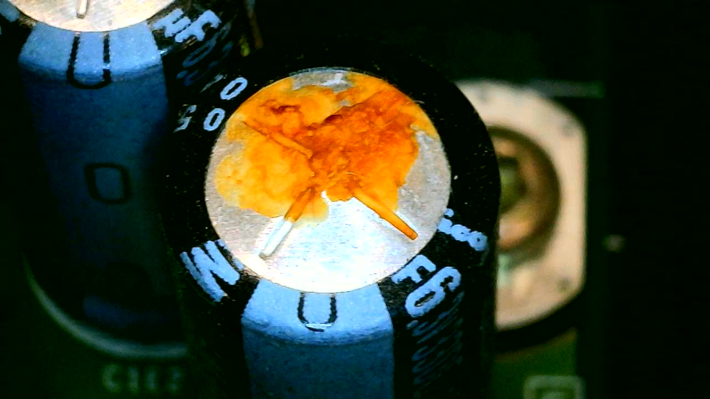

1. Leaking or Bulging Capacitors
Capacitors on the motherboard and power supply can dry out or leak over time. The clock capacitor is especially prone to leaking, and once fluid begins to drip it can cause trace rot and long-term board damage.
Replacing failing caps early prevents permanent electrical issues and keeps your Xbox running smoothly.